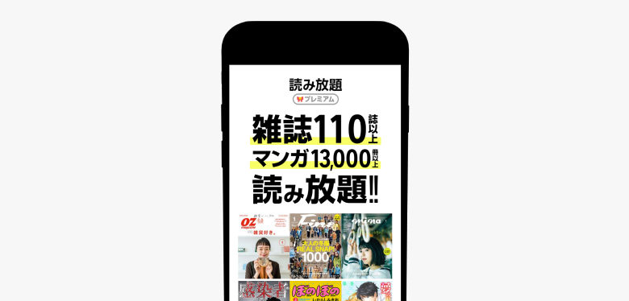
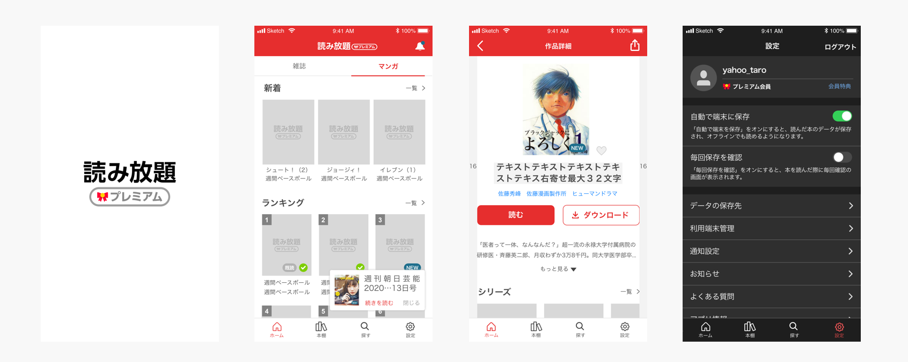
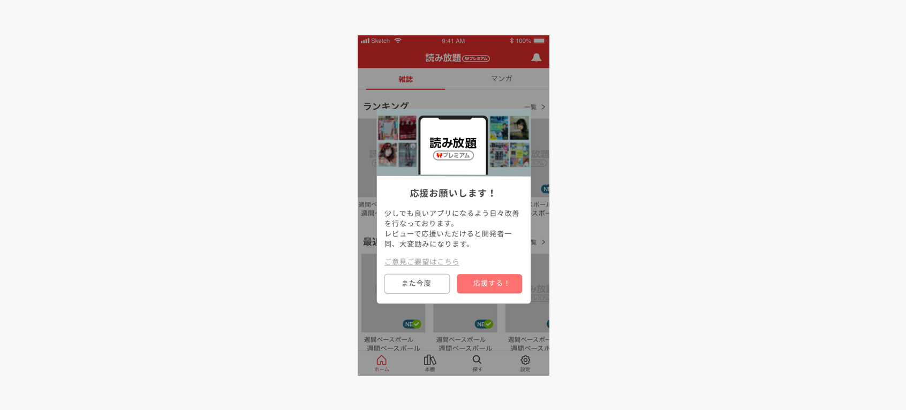
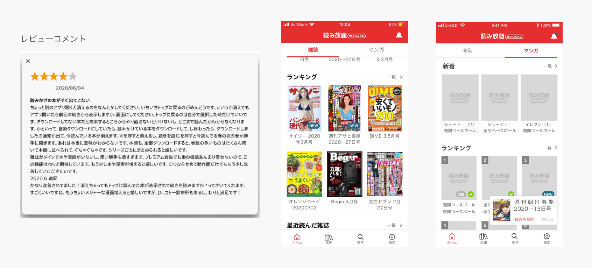
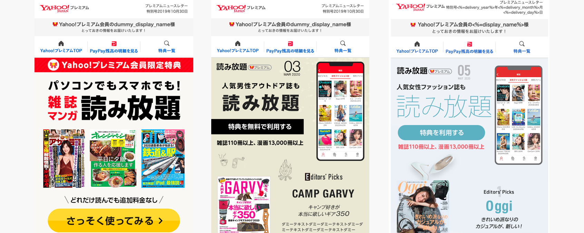
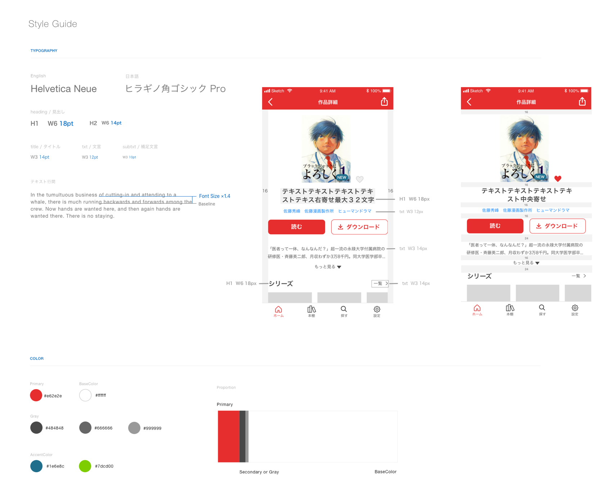

2019年2月にリリースされた月額課金ユーザー向けサービスのスマートフォン向けアプリにおいて、課題抽出から仕様策定、UI作成、ストア評価改善、デザインテストまで幅広く担当しました。
ストアレビューや定性データ、DAU・MAUなどの数値を元に多角的なアプローチでアプリの改善を推進しました。
現状の課題を元に改善案を提案し、リリース後はレビューやDAU・MAUの数値を元に評価を行いました。Atomic Designの概念を取り入れ、コンポーネント単位でパーツを作成・管理することで品質と制作効率を両立させました。

ユーザーの体験を阻害しないよう、評価ダイアログを表示させるタイミングとユーザーセグメントを緻密に絞り込んで実装。結果、ストア評価を2.9前後から4.0程度まで改善することに成功しました。

ストアコメントから継続的に改善項目を洗い出し新機能として実装。また、課金会員向けの訴求要素の有効性を検証するため、事前にデザインテストマーケティングを実施しました。


リリース段階で明文化されていなかったトーン＆マナーやUIルールを再整理し、チーム全体で一貫したデザインを維持できるスタイルガイドを構築しました。

ストアレビュー等の定性意見とDAU/MAUなどの定量データを組み合わせることで、ユーザーの期待に沿った改善をスピーディーに行う重要性を学びました。
また、ベトナム開発拠点を含むマルチロケーションなチームでの連携において、仕様書やスタイルガイドなどのドキュメントを整理しておくことが製品品質の向上につながることを実践しました。